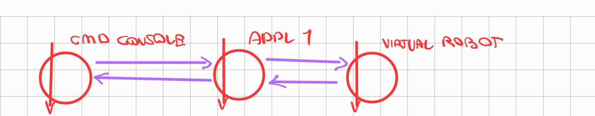
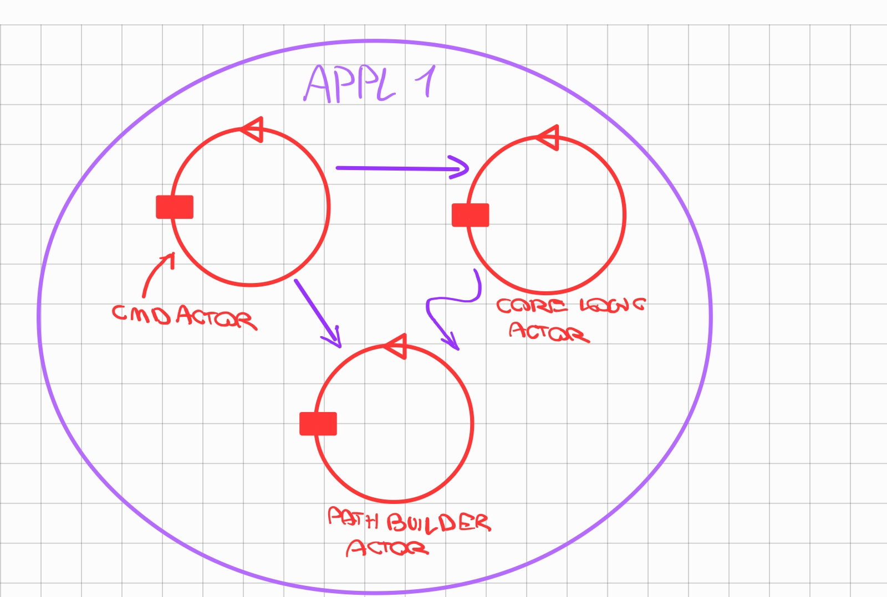

\U000000e8 inoltre presente una infrastruttura logica sviluppata internamente per la definizione di attori si faccia riferimento a Actors23
REQUISITI
Impostare un sistema software che permette ad un utente umano di inviare, mediante una Console, comandi:
start: per indurre a VirtualRobot a percorrare il bordo perimetrale (libero da ostacoli) della stanza rappresentata ne La scena di WEnv
stop: per bloccare il robot
resume: per riattivare il robot
getPath: per ottenere dal robot informazioni sul cammino percorso
Inoltre \U000000e8 richiesto di:
fare in modo che il robot si fermi per un tempo prefissato ( 2sec ) ogni volta che esso viene rilevato da uno dei Sonar cablati nelle pareti della stanza;
prefigurare il tempi previsti per lo sviluppo e i tempi effettivi necessari per il completamento del sistema;
indicare il modo con cui si ritiene opportuno distribuire il prodotto finale.
ANALISI DEI REQUISITI
sonar
componente della scena in grado di rilevare la posizione del robot nella stanza sonar
ANALISI DEL PROBLEMA
I COMANDI
la command console ideata nel precedente step soddisfa i requisiti di controllo sopra descritti, pertanto si prevede il riutilizzo per abbattere i costi di produzione
LOGICA APPLICATIVA
La logica applicativa necessita di essere rivista per poter soddisfare il requisito sonar
necessario poter eseguire azioni alla ricezione dei messaggi che segnalano l'interazione con il sonar
si prevede un attore CORELOGICACTOR che si occupi della intercomunicazione con il virtual robot
il suo compito \U000000e8 quello di comunicare con il virtual robot, inivando messaggi di comando e elaborando i messaggi di stato che arrivano dal virtualrobot
COMUNICAZIONE CON LA COMMAND CONSOLE
si prevede un attore CMDACTOR il cui compito \U000000e8 quello di comunicare con la command console, interpretarne i messaggi e comunicare a sua volta con l'attore incaricato di eseguire la logica applicativa
IL PROBLEMA DELLA GETPATH
l'attuale implementazione della getPath risulta problematica in quanto prevede una cessione del controllo da parte della logica applicativa alla logica di aggiornamento dell'observer
refactor della funzionalita sfruttando la comunicazione tramite eventi
l'attore CORELOGICACTOR non notifica piu degli observer ma genera eventi che possono essere catturati da altri attori
si introduce un nuovo attore PATHBUILDERACTOR incaricato di costruire il path dell robot elaborando gli eventi generati dall' attore CORELOGICACTOR
ARCHITETTURA LOGICA

ARCHITETTURA LOGICA APPL1

PIANO DI LAVORO
REALIZZAZIONE CORELOGICACTOR
implementazione delle logiche applicative
tempo previsto riutilizzando il componente Appl1Core 1 ora
REALIZZAZIONE PATHBUILDERACTOR
implementazione delle logiche di costruzione del percorso del robot
tempo previsto riutilizzando il codice dell'observer 1/2 ore
REALIZZAZIONE CMDACTOR
implementazione delle logiche di traduzione dei messaggi ricevuti dalla command console
tempo previsto 30 minuti
TESTING
test di funzionamento integrale del sistema
tempo previsto 2 ore
TEST PLANS
PROGETTO
DEPLOYMENT
COMPONENTE APPL1
il componente appl1 verra reso disponibile tramite container docker
CMD CONSOLE
la cmd console si prevede di distribuirla in formato JAR in quanto non necessita di particolari dipendenze
By Matteo Longhi email: matteo.longhi5@studio.unibo.it,
GIT repo: https: